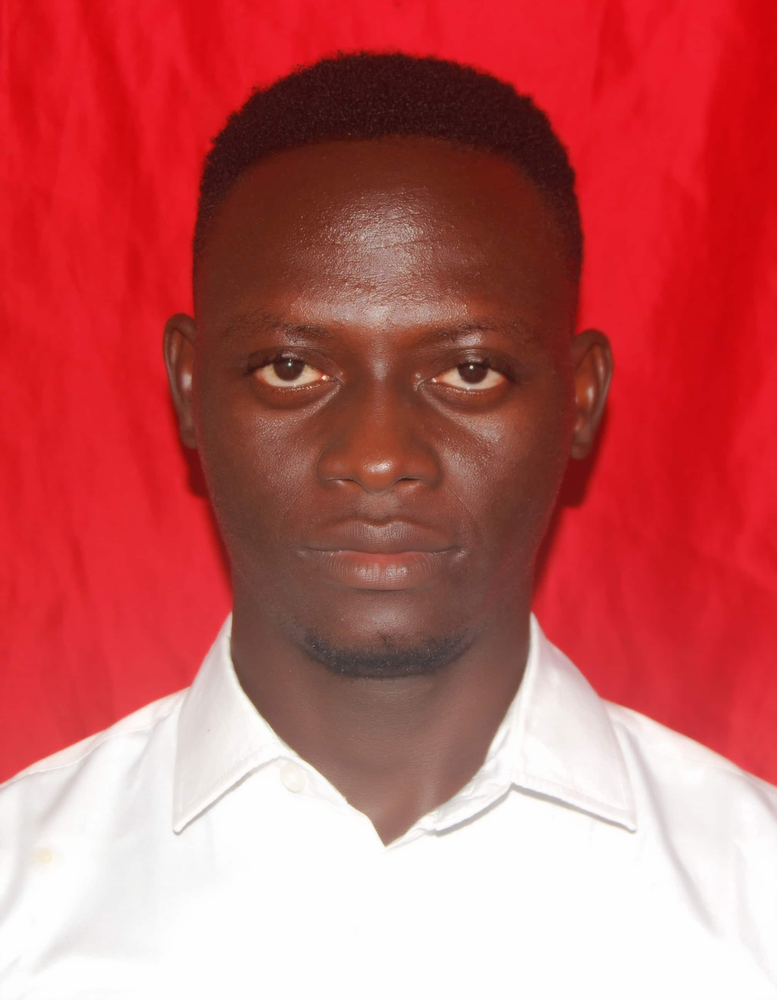

Mathias Abbas Nyako | WDD 130

My name is Mathias Abbas Nyako from Nigeria, I love coding, Motivated Software Development student pursuing a Bachelor of Science in Software Development at Brigham Young University–Idaho.

My name is Mathias Abbas Nyako from Nigeria, I love coding, Motivated Software Development student pursuing a Bachelor of Science in Software Development at Brigham Young University–Idaho.